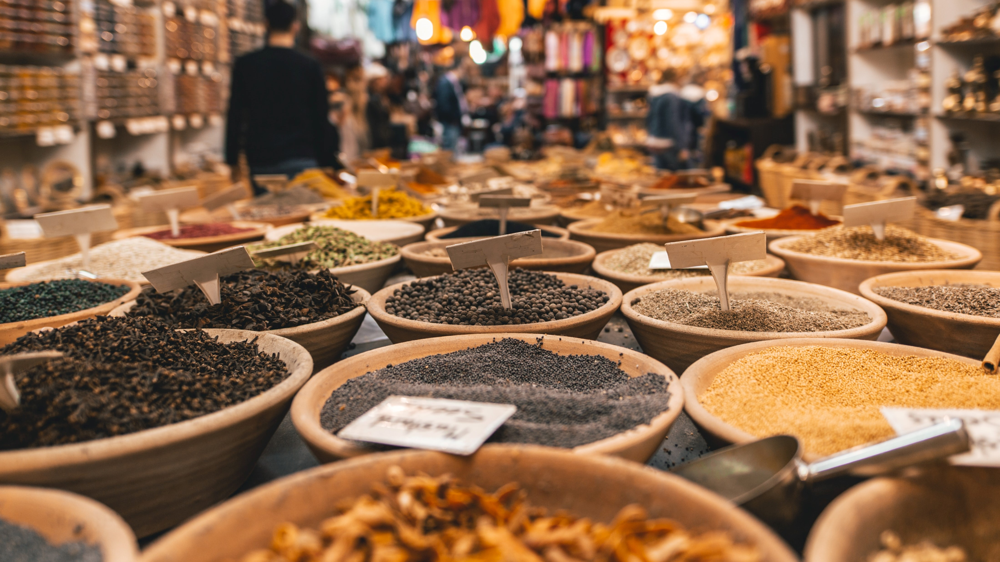

Cavite is one such place. It’s not easy for a non-local to name Caviteño food beyond Bacoor’s famed halo-halo, which is something you can easily get around the metro. It is a place known instead for its rich history, for being home to a good number of national heroes and historical milestones. In any given period, this information might not mean much in a province’s effort to establish a distinct culinary identity. Cavite cannot bank on its historical currency in order to escape the mire of gastronomic obscurity it has long been in. Except recently, things seem to be in favor of just that: history. Amid the popularity of global flavors and the increasing foreign franchises in the country, the past two or three years have seen an emerging interest in local heritage cooking. An informal forecast about the food trends of 2018 commissioned by San Miguel Pure Foods Culinary Center has found that Filipino heritage cuisine is bound to gain more traction among diners. Food that is rich in history is in. Fortunately for Cavite, food is history. That is what we learned a few weeks ago, after going on a food tour around some of the province’s famed dining destinations in Tanza, Cavite City, and Trece Martires. It will take a while before the historically rich cuisine of Cavite can inhabit a unique place in the consciousness of the regular Manileño (especially since many of the dishes we had were typical home-cooked Filipino fare), but it’s the kind of food worth knowing and learning about, if only for the history lessons it tells us about Filipino cuisine.
Ingredients MUTYA:
- 10 pieces shrimp
- 4 pieces crab cut in half
- 1 piece Knorr Shrimp Cube
- 4 ounces squid sliced
- 8 ounces fish fillet
- 1 lb. mussels cleaned
- 1 piece carrot sliced thinly
- 1 piece red bell pepper sliced into squares
- 1 piece green bell pepper sliced into squares
- 1 piece onion chopped
- 1 stalk celery sliced
- Salt and ground black pepper to taste
Ingredients Roux:
- 3 tablespoons butter
- 3 tablespoons all-purpose flour
- 1 ½ cups evaporated milk
- 1 ½ cups water
Preparation:
1. Boil water in a wok or pan. Add crab. Continue boiling for 8 minutes. Transfer the crab and the stock to a clean bowl. Set aside.
2. Make the roux by melting butter in a wok. Add flour. Constantly stir while cooking for 2 minutes. Pour evaporated milk into the wok. Stir until mixture thickens. Pour the crab stock and stir until the texture of the mixture becomes smooth.
3. Add Knorr Shrimp Cube. Stir.
4. Add Crab, mussels, fish, onion, carrot, and celery. Cook for 3 to 5 minutes.
5. Put the bell pepper, shrimp, and squid into the wok. Stir and cook until the color of the shrimp turns orange.
6. Season with salt and ground black pepper.
7. Transfer to a serving bowl. Serve warm. Share and enjoy!
Ingredients CALANDRACAS:
- 750 g beef brisket, cubed
- 3 pcs chorizo, sliced
- 2 cups macaroni pasta
- 400 g can chickpeas, drained and rinsed
- 3 pcs medium potatoes, cubed
- 1/2 cabbage, sliced
- 2 white onions, sliced
- 4 cups beef stock
- fish sauce
- salt
- freshly ground black pepper
- oil
Preparation:
1. Season beef cubes with salt and freshly ground black pepper.
2. In a soup pot add a bit of oil, heat it up until its smoking point then add the beef. Brown beef cubes on all sides.
3. Add the chorizo, onions, beef stock and pour enough water to cover the meat. Bring to a boil then simmer for 1 hour
4. Add the potatoes simmer for 5 minutes
5. Add the macaroni and chickpeas then simmer for 5 minutes.
6. Add the cabbage then simmer for 5 more minutes
7. Season with fish sauce and freshly ground black pepper then serve.
Ingredients COCIDO MEAT:
- 1 piece (100 gm). ham bone
- 1/2 lb Beef short ribs
- 2 lbs Chicken cutlets
- 1/2 lb Pork shoulder or pork loin
- 2 Spanish chorizos or chorizo de bilbao, large
Ingredients COCIDO CANNED GOODS:
- 12 cups Beef or chicken broth, organic
Ingredients COCIDO BAKINGS & SPICES:
- 1 tsp Black pepper, ground powder
- 1 tbsp Peppercorns, black
- 2 tsp Salt
Ingredients COCIDO OILS & VINEGARS:
- 1/4 cup Cider vinegar
- 1/8 cup Olive oil, extra virgin
Preparation To cook the meats stove-top:
1. In a large heavy stockpot, over medium high heat, combine the ham bone, beef, broth (or water), onion, salt and black peppercorns. Cover and bring to a boil. Then lower the heat to a simmer. Continue cooking for 50 minutes till beef is tender.
2. To the same stockpot with the ham and beef, add the pork and chicken. Turn the heat up to a medium-high. Cover and let boil. Then lower heat to a slow simmer. Continue cooking till chicken and pork are cooked for about 45 to 50 minutes.
Preparation To cook the vegetables stove-top:
1. When meats are thoroughly cooked, to the same stockpot, add the Spanish chorizos, potatoes and carrots. Cook for 20 minutes more.
2. ALastly, to the same stock pot, add the green beans, cabbage and garbanzos (chick peas). Cook for 8 minutes more. Remove the vegetables from the stockpot and place on serving platter. Cover to keep warm. Set aside.
Keep the meats and broth covered to keep warm till ready to serve.
Preparation To cook the Eggplant Hash stove-top:
1. In a small stockpot, boil eggplants in water for 25 minutes. When cool enough to handle, peel then mash. Add minced garlic and vinegar. Season with salt and black pepper powder. Set aside.
Preparation To cook the Tomato Sauce stove-top:
1. In a medium-sized saucepan, over medium-high heat, add the olive oil. Saute the garlic and onions. Add the chopped tomatoes. Stir and cover. Continue cooking for 25 to 30 minutes till tomatoes are soft and mushy. Set aside.
Preparation To assemble and serve Cocido:
1. In a large platter, arrange the meats side by side - nestle the beef cubes, ham bone, Spanish Chorizos, pork and chicken next to each other. If platter has room, place the vegetables next to the meats or else plate the vegetables in a separate dish.
2. Separately, ladle the clear, piping-hot broth in a soup tureen, to be served alongside the Cocido platter.
3. Serve on the side: The boiled banana plantains, Eggplant Hash and the Tomato Sauce in individual bowls. Serve the Cocido warm with rice.
The meats and vegetables are meant to be eaten together with the hash and plantains, and with the tomato sauce drizzled on almost everything in each person's individual plates.
Ingredients DINAKDAKAN:
- 1 lb. pig ears
- 1 lb. pig face maskara
- 6 ounces pig liver
- 1 teaspoon ginger powder
- 1 medium red onion sliced
- 6 green and red chili chopped
- 4 tablespoons white or cane vinegar
- 1 teaspoon garlic powder optional
- 1 tablespoon minced ginger
- 3 pieces bay leaves optional
- 1 tablespoon whole peppercorn optional
- 3/4 cup mayonnaise
- Salt and pepper to taste
Preparation:
1. Pour 6 to 8 cups water in a cooking pot. Let boil.
2. Once the water starts to boil, you have the option to add dried bay leaves and whole peppercorn. Add-in the pig ears and face. Set the heat to low and continue to boil for 50 to 60 minutes.
3. Discard the water and let the excess water drip. Rub a little bit of salt all over the boiled ears and face. Rub the ginger powder on the liver.
4. Heat-up the grill. Grill the ears and face for 4 to 6 minutes per side or until it turns a bit crisp, but not burnt. Grill the liver for 5 to 8 minutes depending on the thickness.
5. Remove the grilled pig parts from the grill. Let it cool down and start chopping into bite-size pieces.
6. Meanwhile, combine mayonnaise and vinegar in mixing bowl. Stir.
7. Add some ground black pepper. Continue to stir until the ingredients are well blended.
8. Add the ginger, chili, onion, and garlic powder (optional). Toss.
9. Add more salt if needed.
10. Transfer to a serving bowl. Serve.
11. Share and enjoy!
Ingredients FOR PANCIT ESTACION SAUCE:
- 3 Tablespoons vegetable oil
- 4 cloves garlic minced
- 1/2 pound fresh boiled shrimps boil fresh shrimps in 1 to 2 cups water for 8 to minutes to cook; use discarded heads for extracting shrimp juice
- 1/4 cup shrimp head juice extracted from boiling shrimp heads in water
- 1/4 cup achuete (annatto) water from soaking 2 teaspoons achuete in warm water
- 3 cups chicken broth
- 3 Tablespoons cornstarch dissolved in 1/4 cup chicken broth at room temperature
- 1 to 2 teaspoons patis (fish sauce)
- 1 whole egg beaten
Ingredients FOR PANCIT ESTACION NOODLES:
- 3 Tablespoons vegetable oil
- 12 pieces shallots, chopped fine
- 2 whole garlic cloves minced
- 250 g. dried bihon noodles
- 250 g. togue (mung bean sprouts)
- 1 cup chicken broth
Ingredients FOR THE FINAL PANCIT ESTACION NOODLES ASSEMBLY:
- 1/2 cups salted peanuts crushed coarsely
- 1/2 of a whole white or yellow onion sauteed
- 2 cloves garlic peeled, minced, sauteed
- 1/2 cup crumbled chicharron (pork rinds) crushed
- 1/2 cup flaked tinapa (smoked fish) bones and skin removed
- 1 to 2 stalks scallions sliced
- 1 teaspoon ground black pepper
- 4 whole hard-boiled eggs peeled, sliced, for garnish
Preparation To cook the Palabok sauce:
1.In a medium-sized skillet, over medium-high heat, add the cooking oil. When oil is hot enough, saute the garlic and onions for 1 to 2 minutes till brown. Do not burn the garlic, it affects the outcome of the dish. Pour the shrimp heads liquid. Mix and let the mixture simmer for 1 minute.
2. Pour the achuete (annatto) water and chicken broth. Season with patis (fish sauce). Let the mixture boil in about 5 minutes.
3. Lower the heat to a simmer. Add the diluted cornstarch (now a liquid) to the sauce in the skillet. Stir continuously for about 5 minutes till orange sauce becomes thick and coats the spoon.
Very slowly, pour the beaten egg into the mixture while continuously stirring. You will create a threadlike design of the egg in the sauce. Take away from the heat. Set aside.
Preparation To cook the Noodles:
1. Separately, in a large wok or skillet, add the oil. Saute the garlic and shallots for 1 to 2 minutes. Pour the chicken broth. Add the bihon noodles. Cook till the liquid is absorbed by the noodles. This will take about 5 minutes. Mix well.
Add the togue (bean sprouts). Mix well. Continue cooking for 3 minutes more. Set aside.
Preparation To assemble the Pancit Estacion:
1. Plate the cooked noodles and bean sprouts on a serving platter. Mix in the sauteed onions and garlic.
Pour almost all the palabok sauce on top. Leave a little extra sauce for later when the dish has to be reheated.
To the noodle dish, add the remaining ingredients on top of the noodles and sauce: Boiled shrimps, Tinapa flakes, peanuts, chicharron. Season with ground black pepper.
Garnish with slices of hard-boiled eggs, calamansi (or lemon) and scallions. Serve warm.
Cook's comments:
In the cookbook recipe, the author added crushed kropek (fish crackers) and sliced, fresh kamias (bilimbi) to the topping.
I did not have both ingredients at the time of cooking. But feel free to add if you prefer and if available in your area.
Ingredients FOR TUNA PESTO PASTA:
- 1 cup fresh basil leaves
- 3 cloves garlic, peeled
- 3 tablespoons roasted cashew nuts or toasted pine nuts
- 1/3 cup grated parmesan cheese, more for garnish
- 1/3 cup olive oil
- 2 180-gram cans tuna in oil
- 1 500-gram pack spaghetti, cooked according to package directions
- salt, to taste
- ground pepper, to taste
Preparation:
1. In a food processor or blender, combine all the ingredients for the homemade pesto: basil, garlic, nuts, cheese, and olive oil. Process until finely chopped. Season with salt and pepper, and set aside.
2. In a small pan, mix the tuna with oil and the freshly made basil pesto. Turn off the heat. Toss the mixture in the freshly cooked pasta. Transfer to a bowl, and garnish with Parmesan cheese.
3. Share and enjoy!
Ingredients FOR PANCIT PUSO:
- 200 grams lechon kawali, cubed
- 100 grams shrimp (suwahe), remove heads and include with the dikdikin
- 200 grams small shrimps
- 1 piece crushed garlic
- 2 pieces sliced onion
- 2 pieces carrots, thinly sliced
- 100 grams green beans, sliced diagonally
- 100 grams cabbage, shredded
- fish sauce (patis), to taste
- peppercorn, to taste
- pork stock
- 500 grams bihon
- chicharon
Ingredients FOR THE SOURING AGENT:
- 1 whole puso ng saging
- 2 cups vinegar/ 1 cup water
PROCEDURE :
1. Prepare the lechon kawali, when cooled, chop in small morsels and set aside.
2. Quickly cook the shrimp (headless suwahe,use the head with the rest of the shrimp), in an oil-less hot wok until it turns red, remove from pan immediately, when cooled, shell and set aside.
3. In a mortar, pound the shrimp (body and head) with pestle. separate the shell from the flesh and strain the shrimp juice and mix with macerated shrimp, set aside.
4. In a big carajay, saute the garlic, onion and shrimps. Add the carrot and green beans, after a few minute, add the cabbage and the shrimp juice.
5. Season with patis and paminta. Mix well by using two sandok.
6. Add the pork stock and once it starts to boil, lower the fire and add the bihon, while mixing it well and let it simmer until the noodles absorbed the liquid and the rest of the ingredients are distributed accordingly. Mix in the lechon kawali.
To make the souring agent:
1. Slice the puso ng saging thinly, about 1/8 inch crosswise.
2. Boil vinegar solution ratio 1:1( 1 cup strong vinegar:1 cup water) add a teaspoon of sugar and quarter teaspoon salt.
3. Place the puso ng saging in the boiling solution and let it boil until the liquid is reduced to half.
4. Serve the cooked pancit in a platter and place 2 to 3 tablespoons of the puso ng saging and some of its liquid and coarsely ground chicharon.
Ingredients FOR PANCIT PANSATE:
- 500 grams fresh yellow noodles
- 250 g pork, thinly sliced
- 1 large carrot, julienned
- 1/2 small Chinese cabbage, chopped
- 3 stalks spring onions, sliced
- 3 cups chicken stock
- 1 tbsp cornstarch
- 3 tbsp soy sauce
- 1 tbsp oyster sauce
- 2 small shallots, sliced
- 6 cloves garlic, minced
- 1sesame oil
- oil
- fish sauce
- freshly ground black pepper
- lemon wedges or calamansi
Preparation:
1. Prepare fresh yellow noodles by soaking it in boiling water for a minute. Drain, rinse with cold running water then set aside.
2. Place wok in a high heat, add oil, and once hot add pork then stir fry for 2 minutes or until brown. Remove from wok then set it aside.
3. Add more oil if needed then sauté the shallots and garlic, add the carrots and spring onions stir fry for a minute.
4. Mix the corn-starch, chicken stock, soy sauce and oyster sauce, pour it into the wok. Bring to a boil and let the sauce thicken.
5. Add the noodles and Chinese cabbage, let the noodles absorb some of the liquid and cook for 2 minutes in high heat. Add water if needed
6. Add the pork back in, then season with freshly ground black pepper and fish sauce. Drizzle sesame oil on top.
7. Place in a serving platter together with lemon wedges or calamansi slices.
Ingredients FOR LUMPIA:
- 50 pieces lumpia wrapper
- 3 cups cooking oil
Ingredients FOR FILLING INGREDIETS:
- 1 1/2 lbs ground pork
- 2 pieces onion minced
- 2 pieces carrots minced
- 1 1/2 teaspoons garlic powder
- 1/2 teaspoon ground black pepper
- 1/2 cup parsley chopped
- 1 1/2 teaspoons salt
- 1 tablespoon sesame oil
- 2 eggs
Preparation:
1. Combine all filling ingredients in a bowl. Mix well.
2. Scoop around 1 to 1 1/2 tablespoons of filling and place over a piece of lumpia wrapper. Spread the filling and then fold both sides of the wrapper. Fold the bottom. Brush beaten egg mixture on the top end of the wrapper. Roll-up until completely wrapped. Perform the same step until all mixture are consumed.
3. Heat oil in a cooking pot. Deep fry lumpia in medium heat until it floats.
4. Remove from the pot. Let excess oil drip. Serve. Share and enjoy
Ingredients FOR LUMPIA:
- 50 pieces lumpia wrapper
- 3 cups cooking oil
Ingredients FOR FILLING INGREDIETS:
Filling ingredients
- 2 cups sweet potato cubed
- 2 tbsp fish sauce patis
- 1 lb cabbage shredded
- 1 ½ cup carrots julienned
- ½ cup water
- ½ cup peanuts crushed
- 6 pieces Lettuce leaves
- ½ lb pork thinly sliced
- 1 pack extra firm tofu sliced in strips
- 1 cup shrimp shelled and deveined
- 2 cups string beans baguio beans, chopped
- 1 medium sized onions chopped
- ½ cup cilantro chopped
- 3 tbsp garlic minced
- 1 pork cube
Wrapper ingredients
- 1 cup all-purpose flour
- 2 pieces raw eggs
- 2 tbsp cooking oil
- ½ tsp salt
- 1½ cups milk
Sause ingredients
- 1 tbsp soy sauce
- ½ cup brown sugar
- 2 cups water
- ½ pork cube
- 1 tbsp garlic minced
- 2 tbsp corn starch diluted in 4 tbsp water
Preparation:
1. Cook the filling by heating a pan. Pour-in the cooking oil then sauté the garlic and onions. Add the pork and cook until color turns light brown. Put-in the pork cube and add ½ cup water then simmer until pork is tender. Add the shrimps and sweet potatoes and cook for 5 minutes or until potatoes are soft. Add the tofu and cook for a few minutes. Put-in the cilantro, carrots, and string beans then mix with the other ingredients. Add the cabbage and let cook for 5 minutes. Add the fish sauce and mix. Set aside
2. Make the wrapper by cracking the eggs in a mixing bowl. Beat. Add the milk while beating. Put in the salt and all-purpose flour then mix thoroughly. Add the vegetable oil and mix well. Turn the stove on to medium heat and put the non-stick pan in place. Spray the pan with oil or grease with butter. Pour-in the wrapper mixture (about half a cup) and tilt the pan to distribute the liquid evenly. Cook until the top part of the mixture is dry (about 2 minutes). Using a spatula, remove the cooked mixture and place in a flat plate. Set aside
3. Make the sauce by pouring water in a sauce pan. Bring to a boil. Add the brown sugar and pork cubes. Put some salt and soy sauce then mix well. Dilute the cornstarch in water and pour in the saucepan. Cook until the sauce becomes thick. Set aside.
4. Wrap the filling. Place the wrapper in a plate then place a lettuce leaf in the middle top part of the wrapper. Spoon the filling and place in the middle of the wrapper (over the lettuce leaf). Close the wrapper by folding the lower part first then roll the sides until the filling is sealed.
5. Pour the sauce over the Lumpiang Sariwa and garnish with crushed peanuts and minced garlic.
6. Serve. Share and Enjoy!
Ingredients FOR LUMPIA TOGUE:
- 1 lb togue mung bean sprouts
- 1 medium-sized carrot julienned
- 1 teaspoon garlic minced
- 1 tablespoon onion minced
- 2 tablespoons fish sauce
- 3/4 cup dried shrimps
- 1 cup fried tofu chopped
- 1/8 teaspoon ground black pepper
- Spring roll wrapper
- 3 to 4 cups cooking oil
Preparation:
1. Heat a wok or a frying pan and put-in 2 tablespoons of cooking oil.
2. When the oil is hot enough, Sauté the garlic and onions.
3. Add the dried shrimps and cook for 1 minute.
4. Put-in the fried tofu then stir.
5. Add the fish sauce and ground black pepper.
6. Put-in the mung bean sprouts and cook for 2 minutes.
7. Add the carrot and cook for 1 to 2 minutes. Remove from the pan and let cool.
8. Wrap the cooked vegetable in spring roll (lumpia) wrapper
9. Pour the remaining cooking oil in a cooking pot or deep fryer then apply heat.
10. Deep fry the wrapped lumpia until the color of the wrapper turns golden brown.
11. Remove from the cooking pot or deep fryer and place in a container lined with paper towel to absorb excess oils.
12. Transfer to a serving plate
13. Serve with vinegar and onion dip.
14. Share and enjoy!
Ingredients FOR MINI TURON:
- 3 pieces Saba banana quartered
- 12 pieces thin lumpia wrapper
- 1/2 cup ripe jackfruit sliced into strips
- ½ cup brown sugar
- 1 cup vanilla ice cream optional
- 1 cup canola oil
Ingredients FOR SIMPLE SYRUP:
- 1 cup brown sugar
- 1 cup water
Preparation:
1. Prepare the simple syrup by boiling the water in a pot. Add the brown sugar. Stir until sugar is completely diluted. Continue to cook in low heat until the liquid reduces in half. Set aside.
2. Prepare the mini turon by arranging a piece of sliced banana over a lumpia wrapper. Put a strip of jackfruit on the side and spread a teaspoon or two of brown sugar. Secure the wrap by folding both sides inwards and then roll until the contents are completely wrapped. Seal the end of the wrapper by rubbing a bit of water using your fingers, and then press it gently against the turon.
3. Start to heat the oil in a pan.
4. Meanwhile, brush some simple syrup all over each piece of turon. You can also dip the turon in syrup.
5. Fry one side in low to medium heat for 3 minutes. Turn over to fry the other side for the same time or until the mini turon pieces are golden brown and crispy.
6. Arrange in a plate. Serve with scoops of vanilla ice cream.
7. Share and enjoy!